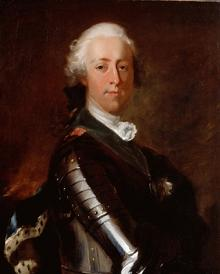
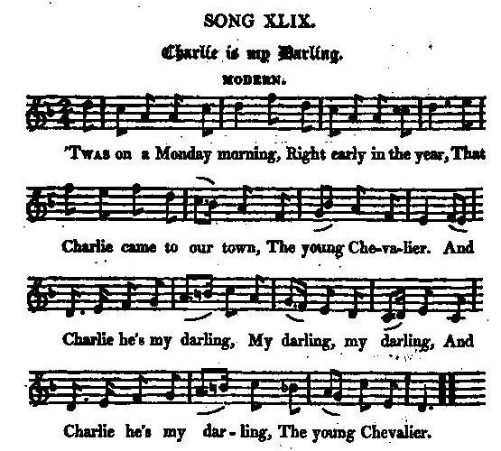
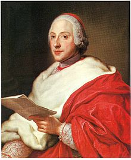
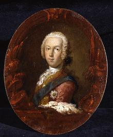

O Charlie is My Darling
C'est Charlie que je préfère
Lyrics by Robert Burns/ James Hogg / Carolina Nairne
Scottish air published in two versions in Gow's "Complete Repository -Part 4" in 1817
Tune - Mélodie (Modern version, MIDI)
Tune - Mélodie (Modern version, MP3)
Tune - Mélodie (Original version, MIDI)
Scottish air published in two versions
in Gow's "Complete Repository -Part 4" in 1817
Sequenced by Christian Souchon




|
To the portraits
 The portrait on top of the present page (left), by Maurice Quentin de la Tour , was generally considered a faithful image of Prince Charles. It adorns all biographies of the Prince and is even used by the Oxford Dictionary of National Biography as the best likeness of him.Now, the comparison with a portrait of his brother Henry Benedict in his dress as Cardinal of York (by a painter in the circle of Anton-Raphael Mengs, 1728 - 1779) clearly shows that it is in fact the latter's effigy in military guise. Before he became a cardinal in 1747, shortly after his brother's failure, Henry served in the French Army at the siege of Antwerp in 1746. The Scottish National Gallery had bought the work at auction for £ 22,000 in 1994. Dr Bendor Grosvenor first suggested that the portrait could have been wrongly identified in the "British Art Journal" in 2008. One of the most faithful effigies of Prince Charles Edward Stuart at the time of his adventurous attempt should be a painting by Sir Robert Strange showing the young man surrounded with grandiose drapery, wearing the star and riband of the Order of the Garter and feathered bonnet as beseems the son of the legitimate sovereign. Strange was an ardent Jacobite who, among others designed the banknotes for the exiled Stuarts, to be used when their rule was restored. His most familar works when he was on the Continent are the painted small portraits of the 45 Rebellion leaders, most notably Lord George Murray and Charles Edward Stuart. Some of them are copies after portraits (one of them being the painting by Louis Tocqué addressed hereafter), while others like the opposite example seem to be independent compositions. He was present at Prestonpans and Falkirk as well as at Culloden, as described in his memoirs. His convertion to Jacobitism was caused by his love to a lady, Isabella Lumisden who made it a condition to his marriage to her. It is said that when Hanoverians were searching for him at his bride's house, he hid under her skirts while she embroidered and sang a Jacobite ballad. After marrying Isabella Strange went in exile to Rouen. Before the amnesty of 1747, he produced many small pencil, oil and engraved portraits of the Pretender, clandestine images which were easily hidden. In 1749 he moved to Paris and did not return to England for another ten years, when he was asked by the painter Alan Ramsay to engrave his own portrait of the then Prince of Wales, the future King George III. Strange refused to undertake the commission. But in 1784 he recovered the King's favour by engraving Van Dyck's portraits of the Royal Collection to which he was allowed unlimited access. He was knighted in 1787 by King George III for engraving the apotheosis of the Royal children after Benjamin West. A much more flattering portrait of Bonnie Prince Charlie was painted by Louis Tocqué in 1748 (top of this page, right). In spite of his triumphant aspect, The portrait was made after the failure of the '45'. Since the courts of Europe were beginning to abandon the Jacobite cause, it seemed all the more important to produce a truly imposing and vigorous image. Several engravings (by Johan Georg Wille, 1748; by Thomas Hodgetts and Son, 1833; by J.C. Amylage, 1859; G.B. Shaw, 1860) were made after this painting. Conclusion: both brothers were equally "bonnie" |
A propos des portraits
 Le portrait en haut à gauche de cette page, par Maurice Quentin de la Tour , était générallement considéré comme l'image la plus fidèle du Prince Charles. Il orne toutes les biographies du Prince et c'est celui qu'a retenu l'Oxford Dictionary of National Biography comme étant le plus ressemblant.Il n'est que de jeter un coup d'oeil au portrait de son frère Henri - Benoît en costume de Cardinal d'York (par un peintre de l'école d'Anton Raphael Mengs, 1728 - 1779) pour se persuader qu'il s'agit en réalité d'un portrait de ce dernier revêtu de la cuirasse. Avant de devenir cardinal en 1747, peu aprè l'échec subi par son frère, Henri avait servi dans l'armée française au siège d'Anvers en 1746. La Scottish National Gallery avait acheté cette oeuvre aux enchères pour 22.000 £. C'est le Dr Bendor Grosvenor qui le premier suggéra qu'on s'était trompé dans l'identificarion du modèle, dans un article du "British Art Journal" en 2008. L'un des portraits les plus ressemblants du Prince Charles Edouard Stuart à l'époque des ses aventures pourrait bien être une peinture de Sir Robert Strange montrant le jeune homme sur fond de draperies antiques, portant le ruban de l'ordre de la Jarretière, l'Etoile et le bonnet à panache que se doit d'arborer le fils d'un souverain légitime. Strange était un ardent Jacobite qui, entre autres, dessina des billets de banque à l'effigie des Stuarts, qu'on utiliserait lorsqu'ils seraient restaurés. Sur le Continent sa production habituelle consistait en des petits portraits peints des chefs de la rébellion, dont les plus connus sont ceux de Lord George Murray et Charles Edouard Stuart. Certains d'entre eux sont des copies d'après des portraits (l'un d'eux étant le tableau de Louis Tocqué dont il va être question plus loin), tandis que d'autres, tel que l'exemple ci-contre semblent être des compositions originales. Il était présent à Prestonpans et Falkirk, ainsi qu'à Culloden, s'il faut en croire ses mémoires. C'est par amour qu'il se convertit au Jacobitisme. L'élue de son coeur, Isabella Lumisden en fit une condition à leur mariage. On raconte que lorsque les troupes gouvernementales fouillaient la maison de sa fiancée à sa recherche, celle-ci le cacha sous son ample robe, tandis qu'elle brodait tout en chantant une ballade Jacobite. Après avoir épousé Isabella, Strange s'exila à Rouen. Jusqu'à l'amnistie de 1747, il produisit un grand nombre de petits portraits du Prétendant au crayon, à l'huile et gravés, des images clandestines faciles à dissimuler. En 1749 il vint s'établir à Paris. Il ne rentra en Angleterre que dix ans plus tard, lorsque le peintre Alan Ramsay lui demanda de graver son propre portrait du Prince de Galles, le futur roi George III. Strange refusa d'exécuter cette commande. Mais en 1784 il rentra dans la faveur du roi en gravant des portraits de Van Dyck's conservés dans la collection royale à laquelle ont lui accorda un accès illimité. Il fut fait chevalier en 1787 par le roi Georges III pour le remercier d'une gravure représentant l'apothéose des enfants royaux d'après Benjamin West. Un portrait bien plus flatteur de "Bonnie Prince Charlie" a été peint en 1748 par Louis Tocqué (en haut de cette page, à droite). En dépit de son aspect triomphant, ce portrait représente le Prince après don échec de 1746. Comme les cours européennes commençaient à prendre leurs distances avec les Stuarts, il semblait d'autant plus essentiel de présenter de l'héritier une image respirant la forece et imposant le respect. Plusieurs graveurs (Johan Georg Wille, 1748; Thomas Hodgetts et son fils, 1833; J.C. Amylage, 1859; G.B. Shaw, 1860) reproduisirent ce portrait. Conclusion: les deux frères étaient aussi "bonnie" l'un que l'autre! |
|
To the tune:
No trace of any such song, not even a title, is in the musical and other collections of Scottish song, and presumably the tune "Charlie he's my darling" published in the "Scots Musical Museum" is a pure original . W. Stenhouse , in his "Illustrations", 1839, first connected Burns with this song in these words : "Twas on a Monday morning" was communicated by Burns to the editor of the Museum. The air was modernized by Clarke. The reader will find a genuine copy of the old air in Hogg's Jacobite Relics, 1821, ii. page 93." On this, one may remark that Stenhouse is not known to have had a personal acquaintance with Clarke, the musical editor of the Museum, and that Stenhouse himself communicated to Hogg the ' "genuine copy of the air" which consists principally in leaving out the accidental sharps. Gow's "Complete Repository", Part 4, published in 1817 has two sets of the air, "original" and "modern". The latter is hardly different from the Burns/Hogg version (sound background of the present page). Source "Complete songs of Robert Burns Online Book" (cf. Links). |
A propos de la mélodie:
On ne trouve pas de trace de cet air, pas même de son titre, dans les recueils de musiques et livres de chants écossais et l'on peut raisonnablement penser que l'air "Charlie he's my darling" publié dans le "Musée" est une mélodie originale. W. Stenhouse , dans ses "Illustrations", 1839, fut le premier à attribuer ces paroles à Burns, quand il écrivit: "Twas on a Monday morning" fut communiqué par Burns à l'éditeur du "Musée". L'air avait été modernisé par Clarke. Le lecteur trouvera une reproduction fidèle de l'original dans les "Jacobite Relics" de Hogg, 1821,ii, page 93." Ceci dit, on peut remarquer que Stenhouse n'est pas connu pour s'être familiarisé avec l'oeuvre de Clarke, le rédacteur musical du Musée. On notera en outre que c'est lui-même qui a fourni à Hogg la "reproduction fidèle de l'original", qui consiste essentiellement à laisser de côté les dièses incidents. Le "Complete repository", volume IV de Gow, publié en 1817, donne de cette mélodie 2 versions, l'originale et la moderne, qui se rapproche le plus de la version Burns-Hogg (fond sonore). Source "Complete songs of Robert Burns Online Book" (cf. Liens). |
|
To the texts:
James Hogg , editor of "The Jacobite Relics of Scotland" (1819/1821) gives us "Charlie is my Darling" from "The Museum" (Volume V N°404, page 440) as “Original" (Song N°50 of the 2nd series). Apparently, he did not know that it was a “vamp” by Burns. As mentioned above, though William Stenhouse remarked that "this Jacobite song was communicated by Burns to the editor", which could infer that it was an old contemporary song, merely communicated by him, if the British Museum had not a copy of the poem in Burns' handwriting. Hogg wrote his own version, subtitled "Modern" (Song N°49), "at the request of a friend, who complained that he did not like the old verses" As for Lady Nairne 's version, here are excerpts from the critical essay "Gender, Genre and the Imagining of the Scottish Nation: the Songs of Lady Nairne" by Leith Davis "A number of Jacobite songs fall into a category which was described as "erotic." They depict "the absent king as lover", often from the perspective of the beloved. As a critic suggests, "it is notable how many later Jacobite songs do have a female narrator". Burns' version of "Charlie he's my darling" foregrounds the element of female desire found in many such songs, reinforcing the political transgression by combining it with a depiction of transgressive female behaviour. In other words, Burns' version partakes of the levity of the older ballads. As he is walking up the street, Prince Charles "spie[s] a bonnie lass" looking at him through the window. He bounds up the stairs to reach her, and Burns suggests that she is equally if not more desirous to meet him: "And wha sae ready as hersel/ To let the laddie in". In addition, Charles' seductive effect on the woman is presented in terms which emphasize her sexual appetite: "For brawlie weel he ken'd the way/ To please a bonnie lass". The chorus, "An' Charlie he's my darling, my darling, my darling," further reinforces the woman's perspective and agency in the encounter. Many of Lady Nairne's Jacobite songs, like "The Hundred Pipers" and "The Gathering Song," fall into the category: "the aggressive/active song, calling for war or opposition to the Whig state". When she writes or rewrites songs that recall the "erotic" category, she revises them to eliminate sexually explicit material. Nairne's version of "Charlie is My Darling," for example, retains the chorus but replaces the sexual attraction between Prince Charles and the individual woman with a more general attraction that the troops have for the townsfolk: 'And a' the folk came running out To meet the Chevalier.' Burns' version ends with a suggestion that all the Jacobite soldiers are as dangerously attractive as Charles: 'We daur na gang a milking, For Charlie and his men.' Nairne, however, depicts the soldiers as faithful husbands and fathers: 'They've left their bonnie Hieland hills Their wives and bairnies dear, To draw the sword for Scotland's lord, The young Chevalier." |
A propos des textes:
James Hogg , qui publia les "Jacobite Relics of Scotland" (1819/1821) donne "Charlie is my Darling" tiré du "Museum" (Volume V N°404, page 440) comme étant “original" (chant N° 50, seconde série). A l'évidence, il ne savait pas qu'il s'agit d'une "improvisation soignée” que l'on doit à Burns. Comme on l'a dit, bien que William Stenhouse précise que "ce chant Jacobite avait été communiqué à l'éditeur par Burns", laissant entendre qu'il n'avait fait que transmettre un chant contemporain des événements, il existe au British Museum un exemplaire de ce poème de la main de Burns. Il composa sa propre version, sous-titrée "version moderne" (N°49) "à la demande d'un ami qui trouvait déplaisante l'ancienne version." Concernant la version de Lady Nairne , voici des extraits de l'essai critique "Sexe et genre dans l'imaginaire national écossais: les chants de Lady Nairne" de Leith Davis. "Un certain nombre de Chants Jacobites entrent dans une catégorie qu'on a décrite comme "érotique". Ils dépeignent "le roi absent comme un amant", et se placent souvent du point de vue de l'aimée. Un critique souligne "qu'il est remarquable que dans un grand nombre de chants Jacobites, le narrateur soit une femme." La version de Burns de "O Charlie" fait la part belle à l'élément de désir féminin qu'on trouve dans de nombreux chants de ce type et qui renforce la transgression politique en l'amalgamant à une description d'un comportement féminin transgressif. En d'autres termes, la version de Burns conserve le caractère leste des ballades plus anciennes. Tandis qu'il remonte la rue, Charlie "aperçoit un fort joli minois " qui l'observe par la fenêtre. Il s'engouffre dans l'escalier pour rejoindre la dame et Burns suggère que celle-ci n'est pas moins pressée d'aller à sa rencontre: "elle bondit comme un cabri/ et le presse d'entrer." De plus, l'effet produit par Charles sur elle est présenté en des termes qui soulignent son appétit sexuel: "Car il savait bien comment/ Plaire aux filles de chez nous". Le refrain "Celui que je préfère, ..." souligne que cette rencontre est considérée et décrite du point de vue de la femme. Beaucoup de chants Jacobites de Lady Nairne, tels que "Les cent sonneurs" et "Le chant de rassemblement" entrent dans la catégorie du "chant d'action ou d'agression appelant à la guerre ou à l'opposition à l'état Whig." Quand elle écrit ou réécrit des chants qui ont des relents d'érotisme, elle les réforme et élimine toute sexualité explicite. C'est ainsi que la version Nairne de "O Charlie" conserve le refrain, mais remplace l'attrait sexuel entre Charles et une femme précise par l'attirance plus diffuse qu'éprouve la foule des villageois pour les troupes qui défilent. "Notre ville accueillit Charlie Le Jeune Chevalier." La version de Burns suggère à la fin que la soldatesque Jacobite est non moins dangereuse que Charles: "Nous prenons garde, en allant traire, A Charlie et ses gueux!" tandis que Nairne, décrit ces soldats comme des époux fidèles et des pères de famille irréprochables: "Ils avaient quitté les leurs Et leurs monts familiers Pour combattre pour leur seigneur, Le Jeune Chevalier." |
| Robert Burns (1796) | James Hogg (1821) | Lady Nairne (1821?) |
|---|---|---|
An' Charlie he's my darling,1. 'T was on a Monday morning, Right early in the year, That Charlie came to our town, The young Chevalier.
2. As he was walking up the street,
3. Sae light's he jimped up the stair,
|
An' Charlie is my darling,1. 'T was on a Monday morning, Right early in the year, That Charlie came to our town, The young Chevalier. 2. As Charlie he came up the gate, His face shone like the day; I grat to see the lad come back That had been lang away. 3. Then ilka bonny lassie sang, As to the door she ran, "Our King shall hae his ain again", An' Charlie is the man: 4. Out ow'r yon moory mountain, An' down the craggy glen, Of naething else our lasses sing, But Charlie an' his men. 5. Our Highland hearts are true an' leal, An' glow without a stain; Our Highland swords are metal keen, An' Charlie he 's our ain. |
Charlie is my darlin,
1. 'T was on a Monday mornin
2. As he cam' marchin' up the street
3. Wi' highland bonnets on their heads
4. They've left their bonnie highland hills
5. Oh, there were mony beating hearts
|
| Robert Burns | James Hogg | Lady Nairne |
|---|---|---|
Celui que je préfère,
1. Par un beau matin, un lundi
3. Vite, il monta dans le logis,
Trad. Ch.Souchon(c)2004 |
Celui que je préfère,
1. Par un beau matin, un lundi
|
Celui que je préfère,
1. Par un beau matin, un lundi
2. Tandis qu'il remontait la rue
3. Ces montagnards au bonnet bleu,
4. Tous, ils avaient quitté les leurs
5. Oh, comme alors battaient les coeurs,
Trad. Ch.Souchon(c)2004 |